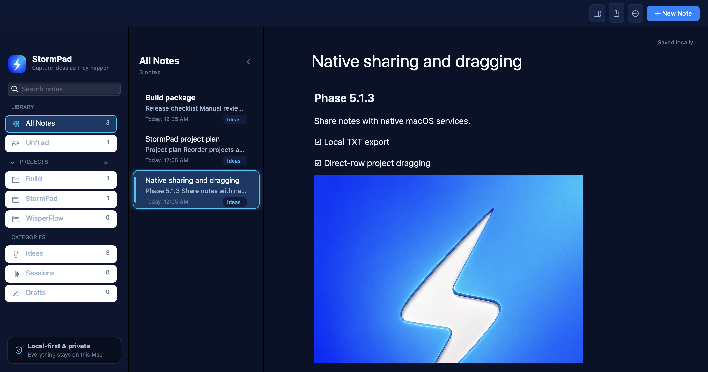

Native and fast
Built with native macOS technologies for immediate idea capture.
A local-first notepad for capturing ideas as they happen.
Capture ideas, organize projects, and keep every note on your Mac.
The beta download is not available yet. Follow the project on GitHub for release updates.

Built for thinking
Built with native macOS technologies for immediate idea capture.
Notes are stored as Markdown inside ~/Documents/StormPad/.
Projects, pinned notes, global search, to-dos, attachments, and block-based editing.
No account, cloud sync, telemetry, advertising, or data sale.
Share notes through AirDrop, Messages, Mail, and the native macOS Share menu. AirDrop a note to your iPhone, then bring it into Apple Notes.
Simple setup
From download to your first note in three familiar Mac steps.
Get the latest StormPad beta for Apple Silicon.
Move the app into your Applications folder.
A Welcome to StormPad note is waiting, showing what you can write. Edit it or delete it and start fresh.
Local-first, always
StormPad keeps your writing on your Mac in files you can read, move, and back up yourself.
Public Beta for Apple Silicon
Your download has started
Three quick steps, then you are ready to capture your next idea.
Find it in your Downloads folder.
Drag the app into Applications.
Launch it from your Applications folder.
Only follow these steps when StormPad was downloaded from the official StormPad website or GitHub repository.